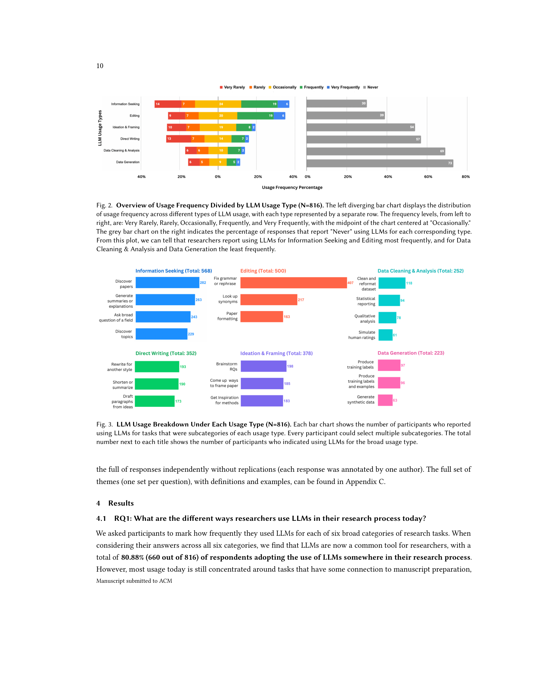
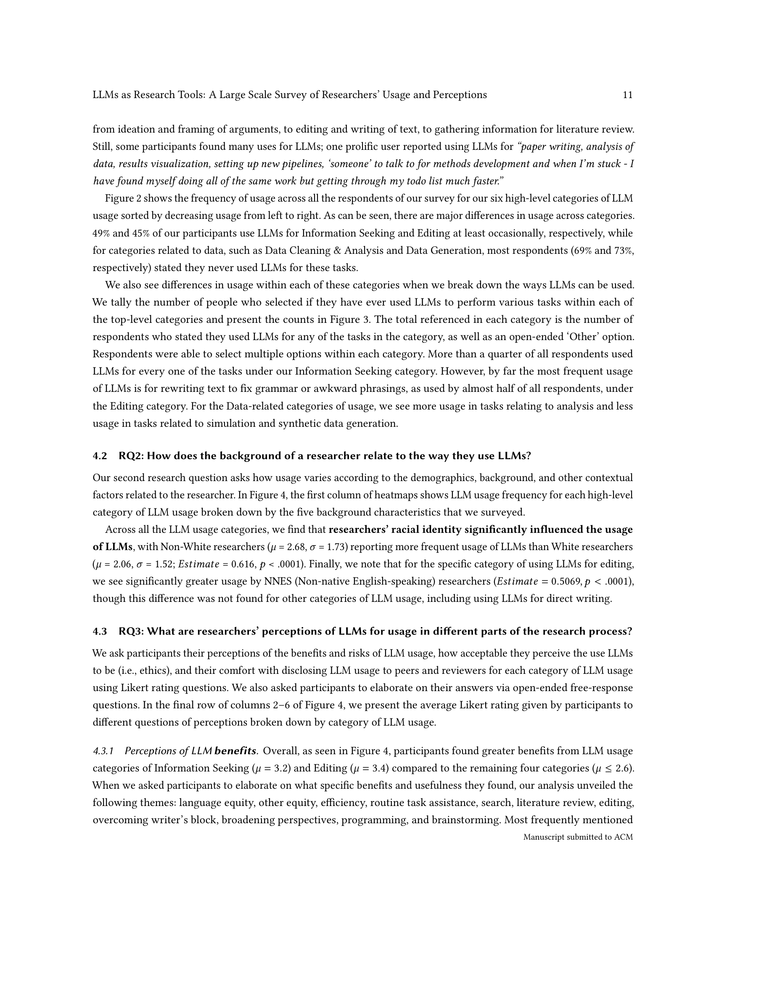
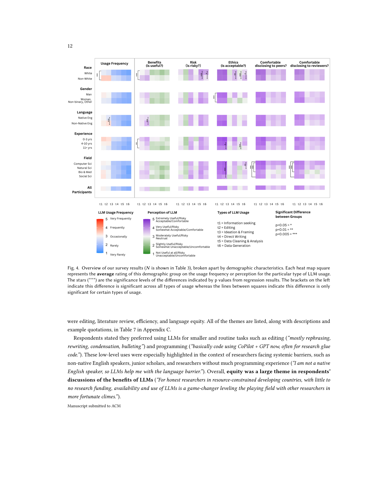
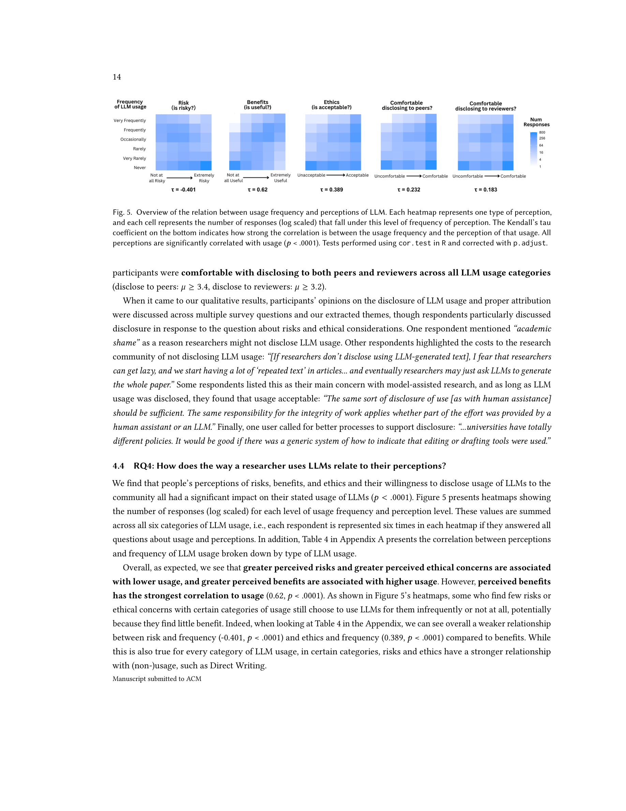

Figure 1
Figure 1
Semantic Scholar에서 검증된 논문 저자 816명을 대상으로 한 최초의 대규모 설문조사로, 연구자들이 LLM을 연구 워크플로우에 어떻게 활용하고 있으며 그에 대해 어떻게 인식하는지를 6가지 활용 유형(정보 탐색, 편집, 아이디어/프레이밍, 직접 작성, 데이터 분석, 데이터 생성)과 5가지 인구통계학적 배경(인종, 성별, 모국어, 경력, 분야)에 걸쳐 정량적·정성적으로 분석한 연구. 81%의 연구자가 이미 LLM을 연구에 활용하고 있으며, 전통적 소수자 집단(비백인, 주니어, 비영어 모국어 연구자)이 더 높은 사용률과 혜택 인식을 보고한다.

Figure 2
LLM의 급속한 대중화로 연구자들이 실제로 이 도구를 어떻게 사용하는지에 대한 체계적 이해가 필요했다. 기존 연구는 특정 분야에 한정(HCI, 심리학, ML 등)되거나 소규모 인터뷰/설문(N=20~72)에 그쳤으며, 다양한 분야와 인구통계학적 배경을 아우르는 대규모 정량적 조사가 부재했다. 특히 LLM 사용이 학계의 기존 구조적 불평등에 어떤 영향을 미치는지, 인구통계학적 집단별 사용 패턴과 인식이 어떻게 다른지를 이해하는 것이 시급한 과제였다.

Figure 3

Figure 4

Figure 5
학계에서 LLM 사용의 현황과 인식을 인구통계학적 관점에서 체계적으로 조명한 시의적절하고 의미 있는 연구. 816명의 검증된 저자를 대상으로 한 대규모 설문은 기존 소규모 질적 연구의 발견을 정량적으로 뒷받침하며, 특히 소수자 집단이 LLM으로부터 더 큰 혜택을 인식한다는 형평성 관련 발견은 정책적 함의가 크다. 다만 CS 분야 과대대표와 자기보고 기반이라는 방법론적 한계가 있으며, 급변하는 LLM 환경에서 스냅샷적 성격을 가진다. "나는 편집용으로만 쓰지만 남들이 논문 전체를 쓸까 두렵다"는 자기 vs. 타인 인식 불일치의 발견은 학계의 LLM 규범 형성 과정을 이해하는 데 흥미로운 통찰을 제공한다.